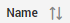
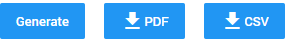

Filter and select multiple reports or all reports by clicking the to open the list of reports.
Update the reports list with the Refresh icon  .
.
Sort the reports by clicking .
Click the Settings icon  to Add/remove columns; Export the Reports as CSV, Excel or PDF file or Save View.
to Add/remove columns; Export the Reports as CSV, Excel or PDF file or Save View.
View each Report by clicking .
You have an option to then:
-
Generate a report
-
Download the report as a PDF
-
Download the report as a CSV
